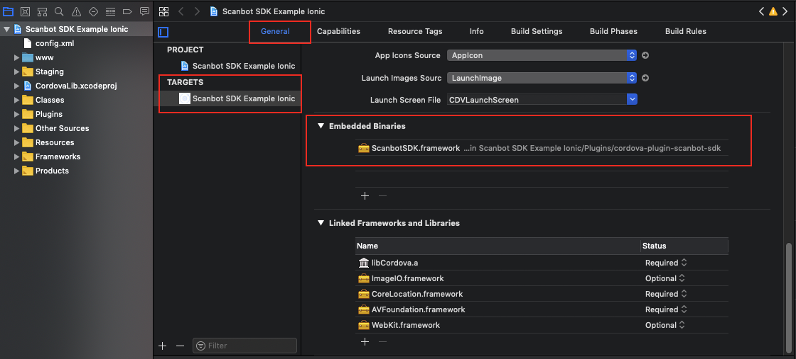

Scanbot SDK Cordova Plugin
Introduction
The Scanbot SDK brings scanning and document creation capabilities to your mobile apps. It contains modules which are individually licensable as license packages. For more details visit our website https://scanbot.io/sdk.html
This Cordova plugin provides implementations of Scanbbot SDK for iOS and Android.
Currently the following Package I functionality is covered by this plugin:
- Camera UI with user guidance for document scanning
- Cropping UI
- Document Detection
- Image Filters
- PDF Creation
Requirements
The Scanbot SDK plugin requires Cordova 5.0+
Supported Platforms
- Android 4.1 (API Level 16) and higher
- iOS 8 and higher
Example Apps
Check out our example apps on GitHub:
- Plain Cordova App: https://github.com/doo/scanbot-sdk-example-cordova
- Ionic 1 App: https://github.com/doo/scanbot-sdk-example-ionic1
- Ionic 2 App: https://github.com/doo/scanbot-sdk-example-ionic2
Installation
The Scanbot SDK plugin is available as npm package.
You can simply install and add it to your app by following command:
cordova plugin add cordova-plugin-scanbot-sdk
Xcode project settings for iOS
When adding a plugin to your app Cordova automatically generates the project files for Xcode. Unfortunately Cordova doesn’t support to define “Embedded Binaries” in the generated Xcode project file which is required by the Scanbot SDK plugin. So we have to fix it manually by following workaround:
-
Open the generated Xcode project file with Xcode IDE:
<YOUR_APP_PROJECT_PATH>/platforms/ios/<YOUR_APP_NAME>.xcodeproj -
Go to “TARGETS” settings and find the section “Embedded Binaries”. Then add the
ScanbotSDK.frameworkto “Embedded Binaries”. TheScanbotSDK.frameworkis provided with the Scanbot SDK plugin.

Please note: By default Cordova puts the ScanbotSDK.framework into “Linked Frameworks and Libraries” which will not work for the Scabot SDK plugin.
The project will compile but the app will crash right after the start!
Permissions
During the installation the plugin automatically adds all required permissions to your App. Here is a listing of those permissions just for your information:
Android (will be added in your AndroidManifest.xml file)
<uses-permission android:name="android.permission.CAMERA" />- This permission is used for the camera views.<uses-feature android:name="android.hardware.camera" />- Camera hardware features.<uses-permission android:name="android.permission.WRITE_EXTERNAL_STORAGE" />- Required to handle temporary files (e.g. PDF creation).<uses-permission android:name="android.permission.READ_EXTERNAL_STORAGE" />- Required to handle temporary files (e.g. PDF creation).
iOS (will be added in your Info.plist file)
NSCameraUsageDescription- “Privacy - Camera Usage Description”. As value describe why your app wants to access the device’s camera.
Modules
-
ScanbotSdk- This module provides the Scanbot SDK functionality for image operations (e.g. filter, PDF creation, etc.) -
ScanbotSdkUi- Provides the UI functionality like Camera UI and Cropping UI.
API Reference
ScanbotSdk- .initializeSdk(successCallback, errorCallback, options) -
function - .documentDetection(successCallback, errorCallback, options) -
function - .applyImageFilter(successCallback, errorCallback, options) -
function - .createPdf(successCallback, errorCallback, options) -
function - .cleanup(successCallback, errorCallback, options) -
function - .DetectionResult -
enum - .ImageFilter -
enum
- .initializeSdk(successCallback, errorCallback, options) -
ScanbotSdkUi
Getting started
Initialize SDK
ScanbotSdk.initializeSdk(successCallback, errorCallback, options)
The Scanbot SDK must be initialized before usage. Make sure to run the initialization only once per app lifetime. Call the initialization after the ‘deviceready’ event has been fired.
Callbacks:
successCallback : function(result)
result- Contains a simple success message as string.
errorCallback : function(error)
error- Contains the error message as string.
Example code for initialization:
document.addEventListener('deviceready', onDeviceReady, false);
function onDeviceReady() {
// ...
initScanbotSdk();
// ...
}
function initScanbotSdk() {
var options = {
loggingEnabled: true,
licenseKey: '' // optional license key (empty for trial mode)
};
ScanbotSdk.initializeSdk(function(result) {
// Scanbot SDK successfully initialized
console.log(result);
}, function(error) {
// Error initializing the Scanbot SDK
console.log('Unable to initialize the Scanbot SDK: ' + error);
}, options);
}
License Key
You can test all Scanbot SDK plugin features and develop your apps without a license. However, if you do not specify the license key when initializing the SDK, it will work in trial mode (trial period of 1 minute). To get another trial period you have to restart your app.
If this is not enough for you, contact us at sdk@scanbot.io and we’ll give you a free no strings attached trial license for a longer period. In order to run the Scanbot SDK plugin functionality within your production app you have to purchase and use a valid Scanbot SDK license.
Each license key is valid only to your apps bundle identifier. The license also defines which modules you are allowed to use. The usage of unlicensed modules will log an error to the console and terminate the app. If your license has expired any calls of the Scanbot SDK plugin will terminate your app.
Example code for defining and using the license key:
// Please note: this is just an example license key string (it's not a valid license)
var myLicenseKey =
"fXbN2PmyqEAZ+btdkSIS36TuX2j/EE5qxVNcZMXYErbLQ" +
"3OBnE10aOQxYI8L4UKwHiZ63jthvoFwUevttctBk0wVJ7Z" +
"+Psz3/Ry8w7pXvfpB1o+JrnzGGcfwBnRi/5raQ2THDeokR" +
"RB1keky2VBOFYbCfYt3Hqms5txF2z70PE/SBTMTIVuxL7q" +
"1xcHDHclbEBriDtrHw8Pmhh9FqTg/r/4kRN/oEX37QGp+Y" +
"3ogwIBbSmV+Cv+VuwtI31uXY3/GkyN/pSJZspIl+exwQDv" +
"O0O1/R/oAURpfM4ydaWReRJtjW8+b1r9rUgPERguaXfcse" +
"HlnclItgDfBHzUUFJJU/g==\nU2NhbmJvdFNESwppby5zY" +
"2FuYm90LmRlbW8ueGFtYXJpbgoxNDg0NjExMTk5CjcxNjc" +
"KMw==\n";
var options = {
licenseKey: myLicenseKey,
// ...
};
ScanbotSdk.initializeSdk(successCallback, errorCallback, options);
Purchase a License
You can check and purchase the Scanbot SDK licenses here: https://scanbot.io/sdk.html.
To request a trial license for a longer period or purchase a production license you have to provide us the bundle identifier of your app.
Please find this identifier in the config.xml file of your app project:
<widget id="my.awesome.app.id" ...>
Logging
When initializing the Scanbot SDK you can enable logging of the SDK. By default logging is disabled.
var options = {
loggingEnabled: true,
// ...
};
ScanbotSdk.initializeSdk(successCallback, errorCallback, options);
On Android logs are printed into LogCat as well as saved on the device. You can find them in Environment.getExternalStorageDirectory()/debug_logs/[package_name]. Usually it is /sdcard/debug_logs/[package_name].
The easiest way to check the log outputs on Android is to use the Android Debug Bridge (adb).
(e.g. $ adb -s <DEVICE_ID> shell "logcat")
On iOS all logs are printed to the console. Please use Xcode to check the log outputs. There will be no log files created by the Scanbot SDK plugin.
Please note: While it may be useful for development, consider switching logging OFF in production builds for security and performance reasons!
Camera UI for document scanning
ScanbotSdkUi.startCamera(successCallback, errorCallback, options)
The Scanbot SDK plugin provides a ready-to-use Camera UI component for guided, automatic document scanning.
Callbacks:
successCallback : function(result)
-
result.imageFileUri- Contains a File URI of the detected document image as JPEG ('file:///...'). The document image is cropped and warped (perspective corrected) by detected polygon. -
result.originalImageFileUri- File URI of the original full image from the camera as JPEG. Can be used for manual cropping correction via Cropping UI if the detected document image was not satisfactory.
errorCallback : function(error)
error- Contains the error message as string.
Options:
var options = {
textResBundle: {
autosnapping_hint_do_not_move: "Don't move",
autosnapping_hint_move_closer: "Move closer",
autosnapping_hint_bad_angles: "Perspective",
autosnapping_hint_nothing_detected: "No document",
autosnapping_hint_too_noisy: "Background too noisy",
autosnapping_hint_too_dark: "Poor light"
},
edgeColor: '#0000ff',
quality: 80
};
options.textResBundle- Optional text resources map to localize or override user guidance hints. If notextResBundlemap is provided english textes will be used as default. The example code above shows all supported text resources keys.options.edgeColor- Optional color for rendered polygon edges. Hexadecimal format#RRGGBBor#AARRGGBB.options.quality- Optional quality of the output image.
Cropping UI
ScanbotSdkUi.startCropping(successCallback, errorCallback, options)
The Cropping UI provides functionality for manual cropping of an image. It uses the edge detection algorithm of the Scanbot SDK and containts some smart UI elements like magnetic lines or magnifier. As input a file URI of an image must be passed. The output is a cropped and perspective corrected image as a new file. The input image file will not be modified.
Callbacks:
successCallback : function(result)
result.imageFileUri- File URI of the cropped image as JPEG ('file:///...').result.polygon- Contains the selected polygon as array.
errorCallback : function(error)
error- Contains the error message as string.
Options:
var options = {
imageFileUri: 'file:///...',
edgeColor: '#0000ff',
quality: 80
};
options.imageFileUri- Input image file URI.options.edgeColor- Optional color for rendered polygon edges. Hexadecimal format#RRGGBBor#AARRGGBB.options.quality- Optional quality of the output image.
Document Detection
ScanbotSdk.documentDetection(successCallback, errorCallback, options)
The Scanbot SDK uses digital image processing algorithms to find rectangular, document like, polygons in a digital image. This function applies edge dectection and processes all image operations in a background thread. There will be no UI started. As input a file URI of an image must be passed. The output contains the Detection Result as enum and on success the cropped and perspective corrected image as a new file as well as the detected polygon. If there was no document detected the result enum provides the exact reason (noisy background, too dark, etc). The input image file will not be modified.
Callbacks:
successCallback : function(result)
result.imageFileUri- File URI of the detected and cropped/warped document image as JPEG ('file:///...'). Maybenullif detection was not successfull.result.polygon- Contains the detected polygon as array. Maybe empty if detection was not successfull.result.detectionResult- The Detection Result.
errorCallback : function(error)
error- Contains the error message as string.
Options:
var options = {
imageFileUri: 'file:///...',
quality: 80
};
options.imageFileUri- Input image file URI.options.quality- Optional quality of the output image.
Apply Image Filter
ScanbotSdk.applyImageFilter(successCallback, errorCallback, options)
Applies filter on an image. As input a file URI of the image must be passed. The output image will be a new file. The input image file will not be modified.
Callbacks:
successCallback : function(result)
result.imageFileUri- File URI of the result image as JPEG ('file:///...').
errorCallback : function(error)
error- Contains the error message as string.
Options:
var options = {
imageFileUri: 'file:///...',
imageFilter: ScanbotSdk.ImageFilter.BINARIZED,
quality: 80
};
options.imageFileUri- Input image file URI.options.imageFilter- ImageFilter enum value.options.quality- Optional quality of the output image.
PDF Creation
ScanbotSdk.createPdf(successCallback, errorCallback, options)
The Scanbot SDK renders given images into a PDF document and stores it as a file. For each image a separate page is generated.
Callbacks:
successCallback : function(result)
result.pdfFileUri- File URI of the result file as PDF ('file:///...').
errorCallback : function(error)
error- Contains the error message as string.
Options:
var options = {
images: ['file:///...', 'file:///...', 'file:///...']
};
options.images- Input images as an array of file URIs in proper order (image element 1 => page 1, etc).
Cleanup
ScanbotSdk.cleanup(successCallback, errorCallback, options)
By calling ths function all temporary output files generated by the Scanbot SDK plugin will be deleted.
Callbacks:
successCallback : function(result)
result- Contains a simple success message as string.
errorCallback : function(error)
error- Contains the error message as string.
Options:
var options = {};
No options are required for this operation.
File Handling & Storage Concept
The Scanbot SDK plugin works with file URIs. That means all input and output files (images, PDFs, etc) are identified by a file URI.
Please note that a file URI is not just a file path : "file:///some/file/path/.." vs. "/some/file/path/.."
Examples of valid file URIs:
-
On Android:
file:///storage/emulated/0/Android/data/my.awesome.app/cache/sbsdk-temp/ce8de3c4-3c96-4ce1-b285-483d01e1dc9a.jpg -
On iOS:
file:///var/mobile/Containers/Data/Application/D2BF9FB2-1024-4418-99B2-3709AB2C171E/Documents/sbsdk-temp/05719BF8-63DB-4C8A-9A57-25B233AED33C.jpg
All output files generated by the Scanbot SDK plugin are a kind of temporary files. We recommend to copy, move or delete the files you get from callbacks to a appropriate storage place.
There is no automatic file clean mechanism in the plugin, because only your App can decide when is the perfect time to remove a file.
To avoid storage space issues caused by temporary files please implement a suitable hook for the cleanup function in your App.
Detection Result values
ScanbotSdk.DetectionResult
DetectionResult.OK- Document detection was successful. The detected contour looks like a valid document.DetectionResult.OK_BUT_BAD_ANGLES- Document was detected, but the perspective is not perfect.DetectionResult.OK_BUT_BAD_ASPECT_RATIO- Document was detected, but it has a wrong rotation relatively to the camera sensor.DetectionResult.OK_BUT_TOO_SMALL- Document was detected, but it doesn’t fill the most best area in the image rect.DetectionResult.ERROR_TOO_DARK- Document was not found, most likely because of bad lightning conditions.DetectionResult.ERROR_TOO_NOISY- Document was not found, most likely because there is too much background noise (maybe too many other objects on the table, or background texture is not monotonic).DetectionResult.ERROR_NOTHING_DETECTED- No document was found.
Image Filter values
ScanbotSdk.ImageFilter
Supported image filters:
ImageFilter.COLOR_ENHANCED- Color-enhancement filterImageFilter.GRAYSCALE- Grayscale filterImageFilter.BINARIZED- Black & White filter
Polygon
The Scanbot SDK polygon is a list with 4 float points (one for each corner). Each point has coordinates in range [0..1], representing position relative to image size. For instance, if a point has the coordinates (0.5, 0.5), it means that it is located exactly in the center of the image.
Example code of a detected polygon as JSON result:
"polygon": [
{"y":0.046, "x":0.13066667},
{"y":0.035, "x":0.91066664},
{"y":0.92, "x":0.9346667},
{"y":0.916, "x":0.10666667}
]
Image Quality / Compression
The quality parameter defines the quality factor of the JPEG output image. The value must be in a range of 1-100,
where 100 means the least quality loss.
This parameter is optional. The default value used by the Scanbot SDK Plugin is 95.
UI Customization
Colors
The most customizable colors can be passed as an optional JSON argument in the corresponding JS function call. Please see the description of the UI functions startCamera and startCropping.
Image Resources
All image resources (icons, buttons, etc) can be replaced in the platforms directory of your app:
- iOS: *./platforms/ios/
/Resources/* - Android: ./platforms/android/res/
Release history
1.1.0
- Android:
- Feature:
qualityparameter in Scanbot SDK functions: Camera UI, Cropping UI, documentDetection, applyImageFilter
- Feature:
- iOS:
- Feature:
qualityparameter in Scanbot SDK functions: Camera UI, Cropping UI, documentDetection, applyImageFilter - Bugfix:
originalImageFileUriin Camera UI callback had no file
- Feature:
1.0.1
- Android:
- Bugfix: OutOfMemoryError in Camera UI (Camera Activity)
1.0.0
- First release version
- Added customization options for colors in UI functions
startCameraandstartCropping - Fixed some image resource issues
0.9.2
- First beta preview.
Libraries and Licenses
Scanbot SDK for iOS uses the following Open Source libraries:
OpenCV 3.1
----------
Copyright © 2014, Itseez. All rights reserved.
This library is distributed under the terms of the following license: http://opencv.org/license.html.
G8Tesseract
-----------
Copyright @ 2014 Daniele Galiotto. https://github.com/gali8/Tesseract-OCR-iOS
This library is distributed under the terms of a MIT License (https://github.com/gali8/Tesseract-OCR-iOS/blob/master/LICENSE.md).
Tesseract 3.04 modified by doo GmbH
-----------------------------------
Tesseract, maintained by Google (http://code.google.com/p/tesseract-ocr/),
is distributed under the Apache 2.0 license (see http://www.apache.org/licenses/LICENSE-2.0).
Leptonica 1.72
--------------
Copyright @ 2001-2015, Leptonica, (http://leptonica.org),
is distributed under a Creative Commons Attribution 3.0 United States License (see http://creativecommons.org/licenses/by/3.0/us/).
OpenSSL 1.0.2d
--------------
Copyright @ 1998-2011 The OpenSSL Project. All rights reserved. (https://www.openssl.org)
This library is distributed under the terms of the following license: https://github.com/openssl/openssl/blob/master/LICENSE
Scanbot SDK for Android uses the following Open Source libraries:
CWAC-Camera
-----------
Licensed under the Apache License, Version 2.0 (the License); you may not use this file except in compliance with the License. You may obtain a copy of the License at
http://www.apache.org/licenses/LICENSE-2.0
Unless required by applicable law or agreed to in writing, software distributed under the License is distributed on an AS IS BASIS, WITHOUT WARRANTIES OR CONDITIONS OF ANY KIND, either express or implied. See the License for the specific language governing permissions and limitations under the License.
RoboGuice
---------
Licensed under the Apache License, Version 2.0 (the License); you may not use this file except in compliance with the License. You may obtain a copy of the License at
http://www.apache.org/licenses/LICENSE-2.0
Unless required by applicable law or agreed to in writing, software distributed under the License is distributed on an AS IS BASIS, WITHOUT WARRANTIES OR CONDITIONS OF ANY KIND, either express or implied. See the License for the specific language governing permissions and limitations under the License.
Android PDF Writer
------------------
Android PDF Writer (APW) is a simple Java library to generate simple PDF documents in Google's Android devices released under the BSD license.
This software includes several classes from the Android Open Source Project
Copyright 2010 The Android Open Source Project
Licensed under the Apache License, Version 2.0 (the License); you may not use this file except in compliance with the License. You may obtain a copy of the License at
http://www.apache.org/licenses/LICENSE-2.0
Unless required by applicable law or agreed to in writing, software distributed under the License is distributed on an AS IS BASIS, WITHOUT WARRANTIES OR CONDITIONS OF ANY KIND, either express or implied. See the License for the specific language governing permissions and limitations under the License.
commons-lang
------------
Licensed under the Apache License, Version 2.0 (the License); you may not use this file except in compliance with the License. You may obtain a copy of the License at
http://www.apache.org/licenses/LICENSE-2.0
Unless required by applicable law or agreed to in writing, software distributed under the License is distributed on an AS IS BASIS, WITHOUT WARRANTIES OR CONDITIONS OF ANY KIND, either express or implied. See the License for the specific language governing permissions and limitations under the License.
commons-io
----------
Licensed under the Apache License, Version 2.0 (the License); you may not use this file except in compliance with the License. You may obtain a copy of the License at
http://www.apache.org/licenses/LICENSE-2.0
Unless required by applicable law or agreed to in writing, software distributed under the License is distributed on an AS IS BASIS, WITHOUT WARRANTIES OR CONDITIONS OF ANY KIND, either express or implied. See the License for the specific language governing permissions and limitations under the License.
commons-codec
-------------
Licensed under the Apache License, Version 2.0 (the License); you may not use this file except in compliance with the License. You may obtain a copy of the License at
http://www.apache.org/licenses/LICENSE-2.0
Unless required by applicable law or agreed to in writing, software distributed under the License is distributed on an AS IS BASIS, WITHOUT WARRANTIES OR CONDITIONS OF ANY KIND, either express or implied. See the License for the specific language governing permissions and limitations under the License.
IntelliJ Annotations
--------------------
Licensed under the Apache License, Version 2.0 (the License); you may not use this file except in compliance with the License. You may obtain a copy of the License at
http://www.apache.org/licenses/LICENSE-2.0
Unless required by applicable law or agreed to in writing, software distributed under the License is distributed on an AS IS BASIS, WITHOUT WARRANTIES OR CONDITIONS OF ANY KIND, either express or implied. See the License for the specific language governing permissions and limitations under the License.
Google Guice Extensions AssistedInject
--------------------------------------
Licensed under the Apache License, Version 2.0 (the License); you may not use this file except in compliance with the License. You may obtain a copy of the License at
http://www.apache.org/licenses/LICENSE-2.0
Unless required by applicable law or agreed to in writing, software distributed under the License is distributed on an AS IS BASIS, WITHOUT WARRANTIES OR CONDITIONS OF ANY KIND, either express or implied. See the License for the specific language governing permissions and limitations under the License.